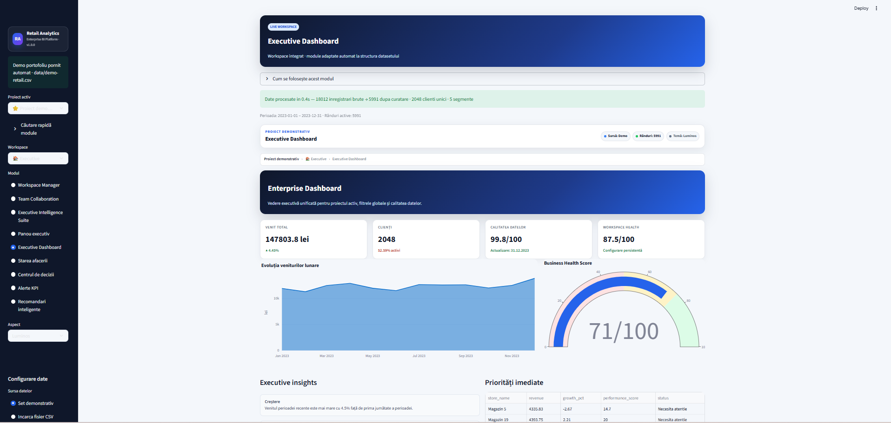
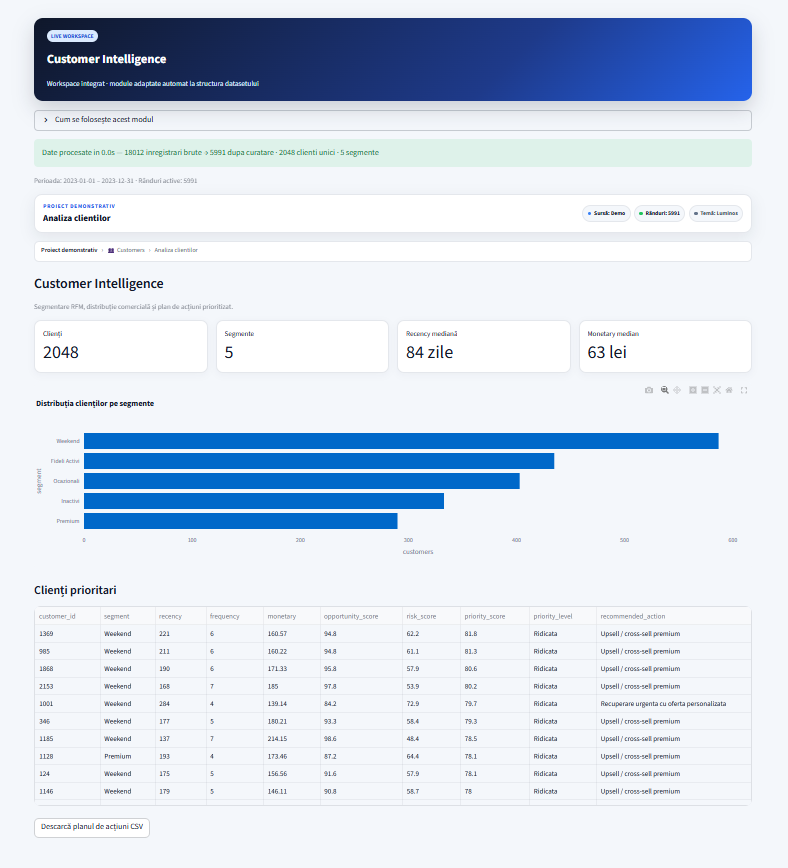
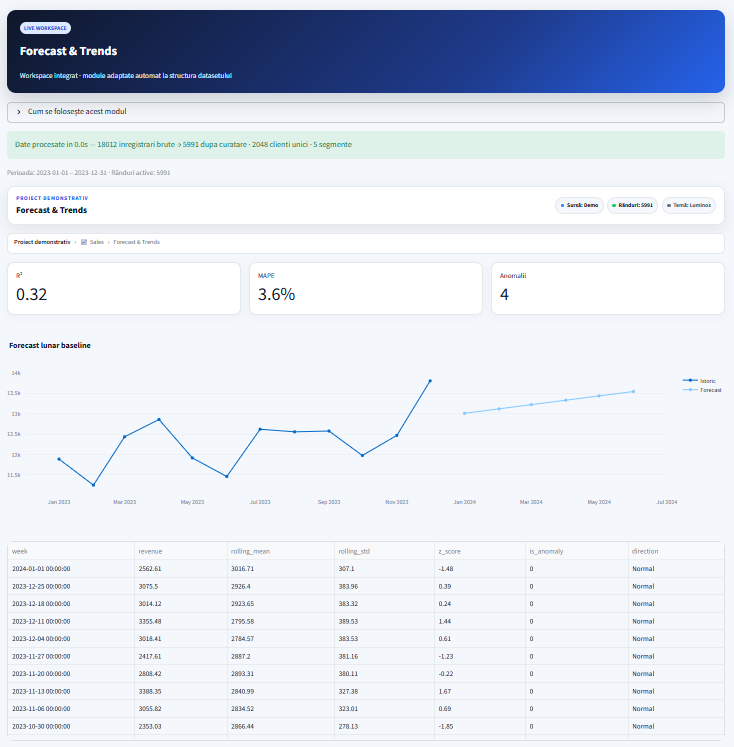
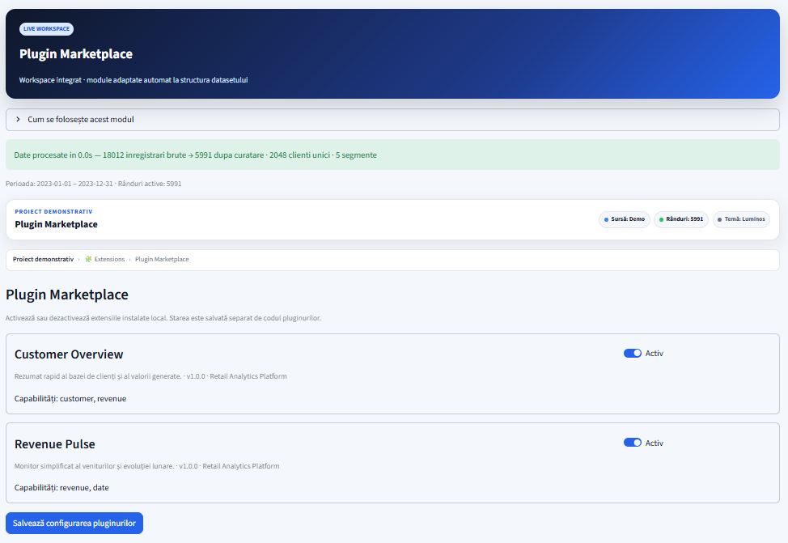

KPIs, trends, alerts, decision summaries and business scenarios.
ENTERPRISE RETAIL ANALYTICS · v1.0.0
Turn retail data into measurable decisions.
A modular analytics platform for executive intelligence, customer segmentation, forecasting, governance, extensibility and runtime operations.
6012synthetic demo rows
2000demo transactions
3 versionsPython CI matrix
Dockervalidated build
01
Product capabilities
A complete workflow from data ingestion to decision support.
RFM, Customer 360, cohorts, CLV and actionable segments.
Portfolio analysis, drill-downs and comparative performance.
Model comparison, experiments, forecasting and governance.
Quality controls, catalog, semantic mapping, versioning and lineage.
Plugins, event bus, background jobs, diagnostics and release validation.
PRODUCT SCREENS
Executive analytics in action
A real platform view generated from the reproducible synthetic retail dataset.
01
Executive Dashboard
Consolidated KPIs, revenue evolution, business health indicators, executive insights and prioritized operational recommendations.

02
Customer Intelligence
Customer segmentation, behavioral indicators, recency analysis and prioritized actions for retention and growth.

03
Forecast & Trends
Historical trends, forecasting indicators and forward-looking analytics for retail planning and decision support.

04
Plugin Marketplace
Modular analytics extensions that can be enabled or disabled without changing the platform core.

MODULAR ARCHITECTURE
Analytics services separated from UI and platform operations.
The product combines a Streamlit shell, reusable UI components, domain services, an extensible platform core and automated validation tooling.
- Canonical schema and quality layer
- Independent customer, product, store and forecast services
- Plugin registry, service container and event bus
- Background jobs and runtime observability
Data SourcesCSV · Excel · MySQL · Demo
↓
Schema & Governancemapping · quality · catalog · lineage
↓
Analytics ServicesRFM · KPI · forecast · ML
↓
Enterprise UI & Platform Coredashboards · plugins · jobs · events
02
Engineering quality
The stable release is validated across multiple runtimes and deployment paths.
Python 3.10Tests passed
Python 3.11Tests passed
Python 3.12Tests passed
DockerBuild passed
Demo integrityChecksums passed
Runtime contractsImports validated
03
Seven-step demonstration
A focused route for interviews, technical reviews and client presentations.
1Load synthetic retail data
2Validate schema and quality
3Review executive KPIs
4Explore Customer 360
5Show ETL and governance
6Compare forecasts and models
7Present plugins and operations
PRIVATE SOURCE · PUBLIC PORTFOLIO
Product visibility without exposing proprietary code.
The complete implementation remains private. This repository publishes only the product story, architecture, quality evidence and demonstration materials.